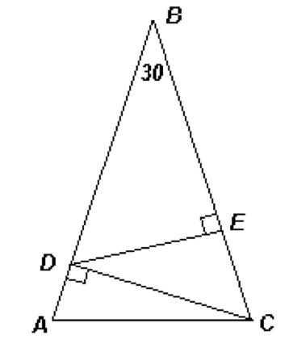

In the isosceles triangle ABC, the angle B is equal to 30$^{\circ}$, and AB = BC = 6. The height CD of the triangle ABC and the height DE of the triangle BDC are drawn. Find the length BE.
DC = ½ BC = 3 $($see the figure$)$. In addition, $angle$DCB = 90$^{\circ}$ - $\angle$ DBC = 60$^{\circ}$, therefore, CE = ½ DC = 1.5. Thus, BE = BC - CE = 4.5.

4.5.
The condition AB = BC is superfluous.